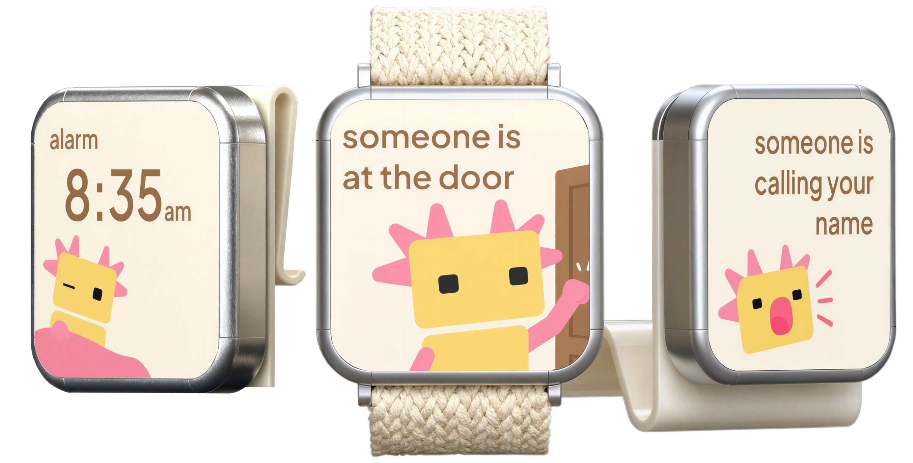

TactiCall turns the sounds in your home into something you can feel, no rewiring, no flashing lights bolted to every wall, just a wristband that knows your doorbell from your dog.
Built with and for the deaf and hard-of-hearing community. Not a medical device: just a better way to stay in the loop.

Your phone listens, TactiCall's model figures out what it heard, and your wrist gets a tap that tells you exactly what's going on, even with your hearing aids off.
Your phone's mic picks up the everyday sounds of your home, no extra hardware bolted to the wall.
On-device AI matches what it hears to a sound you've taught it: doorbell, alarm, your name, whatever matters to you.
A distinct vibration pattern on your wrist tells you which one it was, no glance at a screen required.
Doorbells, fire alarms, phones ringing, the classics sound roughly the same everywhere, so TactiCall can recognise them out of the box.
Your cat; your kid yelling from upstairs; your specific microwave beep. Record a few samples and TactiCall learns to notice them too.
Most assistive devices solve one room. TactiCall moves with you, which matters more than it sounds.
One phone covers the whole home. No flashing-light units to install and re-install every time you move.
Travelling, staying at someone else's place, a hotel for the weekend: it's on your wrist, not bolted to a wall.
Audio is classified on-device. We're not interested in storing what your home sounds like, and we don't.
TactiCall grew out of academic research at University of the Arts London, peer-reviewed and presented at the International Conference on Social Robotics + AI, 2025.
The app works on most smartwatches with a vibration motor. We're also building a dedicated wristband for anyone who'd rather not wear a smartwatch, it's in development now.
We're aiming for roughly £80 one-off for the dedicated wristband, plus £3-5/month for the app and its ongoing sound recognition. Final pricing isn't locked in yet; the waitlist is the best way to hear first.
No. Think of it more like AirPods than a hearing aid: a piece of consumer electronics anyone can wear, with no paperwork attached.
No. It's listening for sound events (a doorbell, an alarm), not conversation, and classification happens on your own phone; audio isn't sent off for processing.
We're finishing technical validation now, with an MVP planned for testing by the end of 2026 and a UK launch to follow in 2027. Join the list and we'll only email you when there's real news.
No spam, no jargon, just a note when there's something real to test or buy.